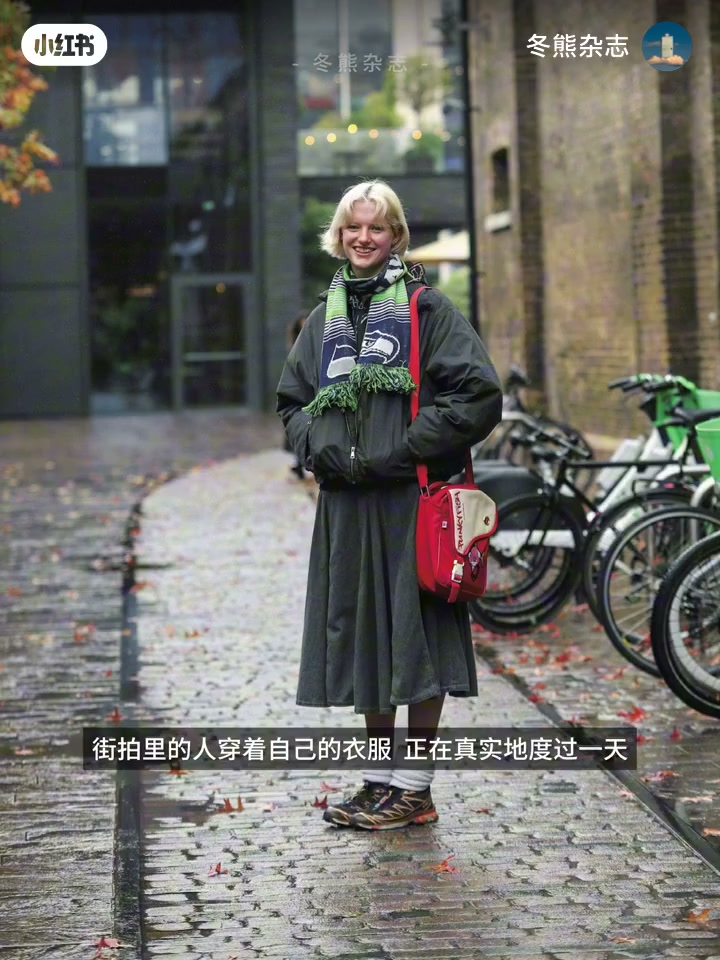
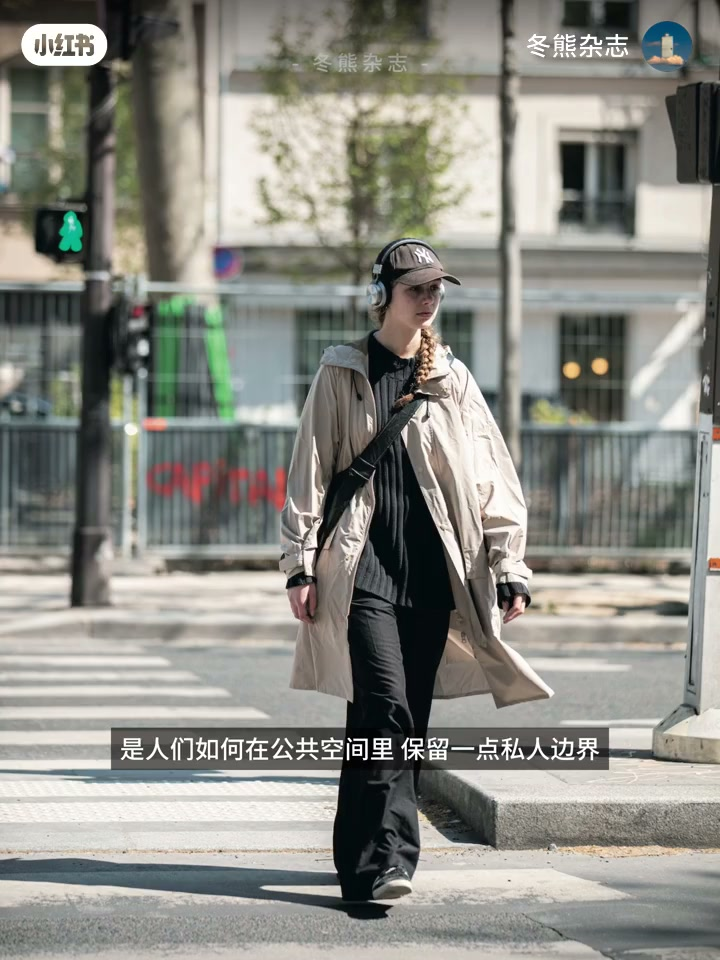
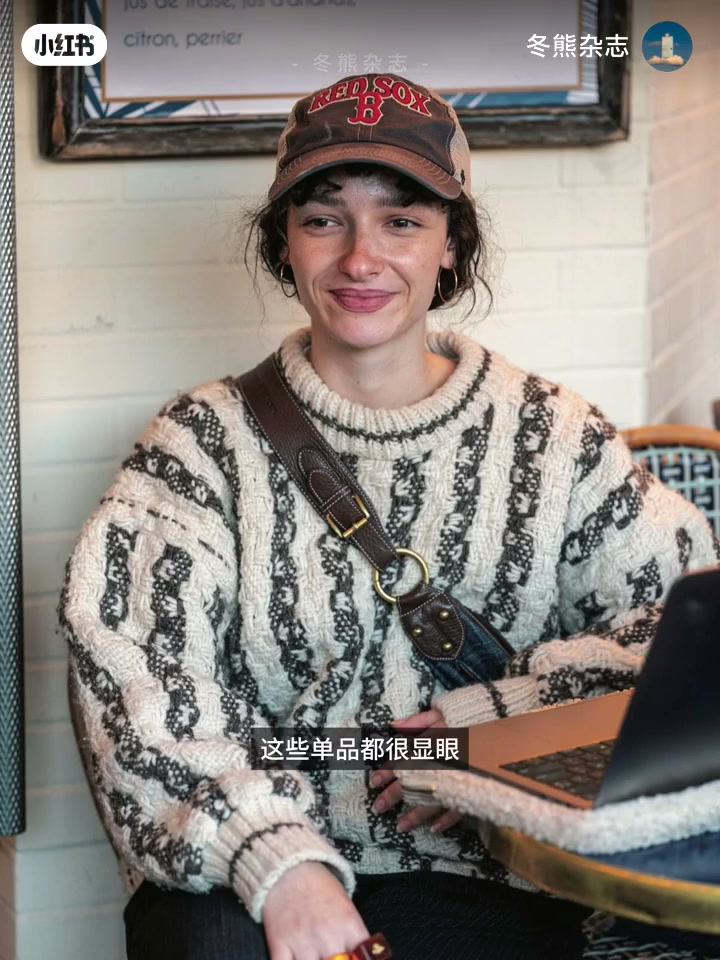
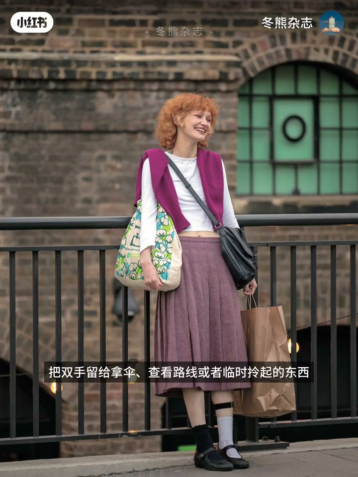
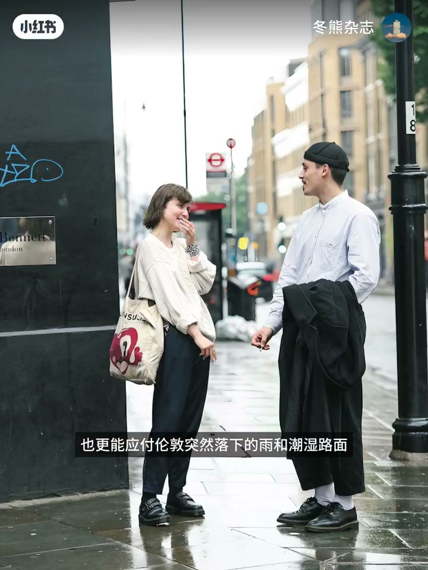
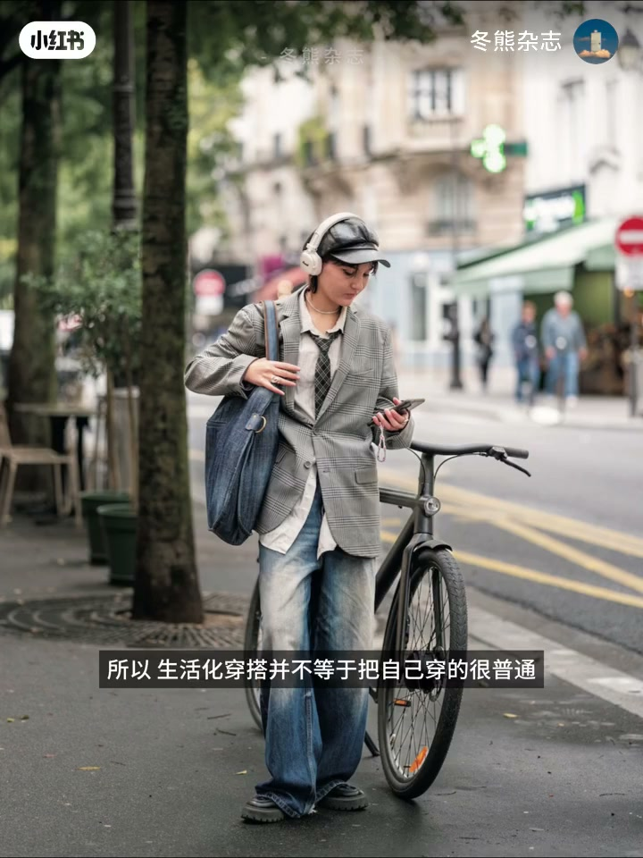
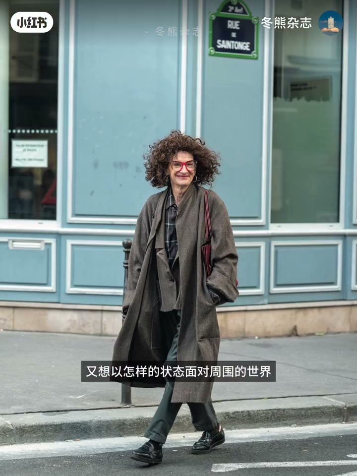

内容要点
许多人最早对穿搭产生兴趣，是从《Fudge》《Clue》这类日杂开始的；冬熊杂志最爱的始终是 Fudge 的街拍特辑。不同于完整造型布景的时装片，街拍里的人穿着自己的衣服、真实度过一天。本期跟着 Fudge 走进伦敦与巴黎街头，从私人边界、移动准备与使用痕迹三条线，重新理解什么叫真正被穿进生活的衣服。
知识结构
兴趣多从日杂开始；街拍是真实度过一天的人；生活化穿搭不是明确风格，而是照顾身体并适应移动、天气与日程。
耳机、棒球帽、头巾在公共街道上保留选择权：听什么、藏乱发、挡风与加轮廓——显眼却不只装饰。
托特装容量、斜挎腾双手；伦敦街头高频马丁靴：厚底应对雨与湿滑，也连着英国街头文化。
风衣没扣好、围巾随手绕、托特鼓成不规则形，都是走过一段路的证据；融入生活要在全天行走使用中仍舒适自在。
生活化穿搭不等于穿得很普通，也不必照搬日杂公式；它是在审美之外多问一天要去哪、遇见谁、走多远、想以什么状态面对世界。耳机帽巾管边界，托特斜挎马丁靴管移动，使用痕迹证明衣服真的陪人走过路。
00:00-00:37从 Fudge 街拍认识生活化穿搭
冬熊开场共鸣：最早对穿搭感兴趣，往往从 Fudge、Clue 这些日杂开始；翻过那么多期后，最喜欢的始终是 Fudge 的街拍特辑——通常冬夏推出，不同于完整造型与布景的时装片。
街拍里的人穿着自己的衣服，正在真实度过一天：赶路、听歌，包里装着工作与生活真正需要的东西。看得多了会发现——生活化穿搭并不是一种明确的风格，而是让衣服照顾身体的需要，也能适应城市里的移动、天气和日程。

00:37-01:16公共空间里保留一点私人边界
自我介绍后立题：跟着 Fudge 前往伦敦和巴黎街头，重新看看那些真正被穿进生活里的衣服。街拍里最先注意到的，是人们如何在公共空间保留一点私人边界。
出镜率很高的头戴式耳机，让人走在嘈杂街道上仍能选择自己正在听什么；棒球帽可藏住早上来不及整理的头发，也能遮挡阳光和部分迎面而来的目光；头巾应对风的同时，为脸部周围增加一层色彩和轮廓。这些单品都很显眼，却不只负责装饰——身处开放街道，仍可决定自己与周围保持怎样的距离。


01:16-01:55为随时发生的移动做好准备
另一条反复出现的主题，是为随时发生的移动做准备。托特包负责容量，可装进电脑、书和临时买下的东西；斜挎的背包也许不是最时尚美观的背法，却能让包更贴近身体，把双手留给拿伞、查看路线或临时拎起的东西。
伦敦街头移动的人群里，马丁靴出现频率很高：或许沉重、可能磨脚，称不上舒服的步行鞋，人们仍反复选择它——一部分源自与英国街头文化的长期联系，另一方面较厚的鞋底更能应付突然落下的雨和潮湿路面。


01:55-02:34使用痕迹，与真正融入生活的收束
真实街拍还允许衣服留下使用痕迹：风衣没有认真扣好，围巾只是随手绕了一圈，装满东西的托特也不再保持漂亮形状——这些细节说明它真的陪一个人走过了一段路。
所以生活化穿搭并不等于把自己穿得很普通，也不需要照搬一套日杂公式；它更像在审美之外，多考虑一天真实的生活：要去哪里、会遇见谁、需要走多远、又想以怎样的状态面对周围的世界。真正融入生活的穿搭，不只存在于镜头定格的那一刻，而应在一整天真实的行走与使用中，依然让人感到舒适与自在。


完整转录（73段）
以下文本由 Whisper medium 模型自动转录，可能存在少量识别误差，已尽可能修正。
不知道有没有人和我一样
最早对穿搭产生兴趣
就是从Fudge、Clue这些日杂开始的
而在我翻过的那么多期杂志里
最喜欢的始终是Fudge的街拍特辑
这些特辑通常会在冬季和夏季推出
不同于经过完整造型和布景的时装片
街拍里的人穿著自己的衣服
正在真实的度过一天
他们赶路、听歌
包里装著工作与生活真正需要的东西
看得多了就会发现
生活化穿搭并不是一种明确的风格
而是让衣服照顾身体的需要
也能适应城市里的移动、天气和日程
大家好,我是东雄
这一期我们就跟著Fudge
前往伦敦和巴黎的街头
重新看看那些真正被穿进生活里的衣服
在这些街拍里
我最先注意到的
是人们如何在公共空间里保留一点私人边界
触景率很高的头戴式耳机
让人们走在操杂的街道上
依然可以选择自己正在听什么
棒球帽可以藏住早上来不及整理的头发
也能遮挡阳光和部分迎面而来的暮光
而头巾则在应对风的同时
也为脸部周围增加了一层色彩和轮廓
这些单品都很显眼
却不只负责装饰
它们让人身处开放的街道
仍然可以决定自己与周围保持怎样的距离
另一个反复出现的主题
是为随时发生的移动做好准备
托特包负责容量
可以装进电脑、书和临时买下的东西
而被鞋快的包包
也许不是最时尚、最美观的背法
却能让包更贴近身体
把双手留给拿伞
查看路线或者临时拎起的东西
而在伦敦街头移动的人群中
马丁薛出现的频率很高
他或许沉重
可能磨脚
称不上是舒服的步行鞋
但人们仍然反复选择他
我想一部分源自他与英国街头文化长期的联系
另一方面
较厚的鞋底
也更能应付伦敦突然落下的雨和潮湿路面
真实街拍还允许衣服留下使用痕迹
风衣没有认真扣好
围巾只是随手绕了一圈
装满东西的托特包
也不再保持漂亮的形状
这些细节让我们知道
他真的陪一个人走过了一段路
所以生活化穿搭
并不等于把自己穿得很普通
也不需要照搬一套日杂公事
他更像是在审美之外
多考虑一天真实的生活
要去哪里
会遇见谁
需要走多远
又想以怎样的状态
面对周围的世界
真正融入生活的穿搭
不只存在于镜头定格的那一刻
而应该在一整天真实的行走与使用中
依然让我们感到舒适与自在